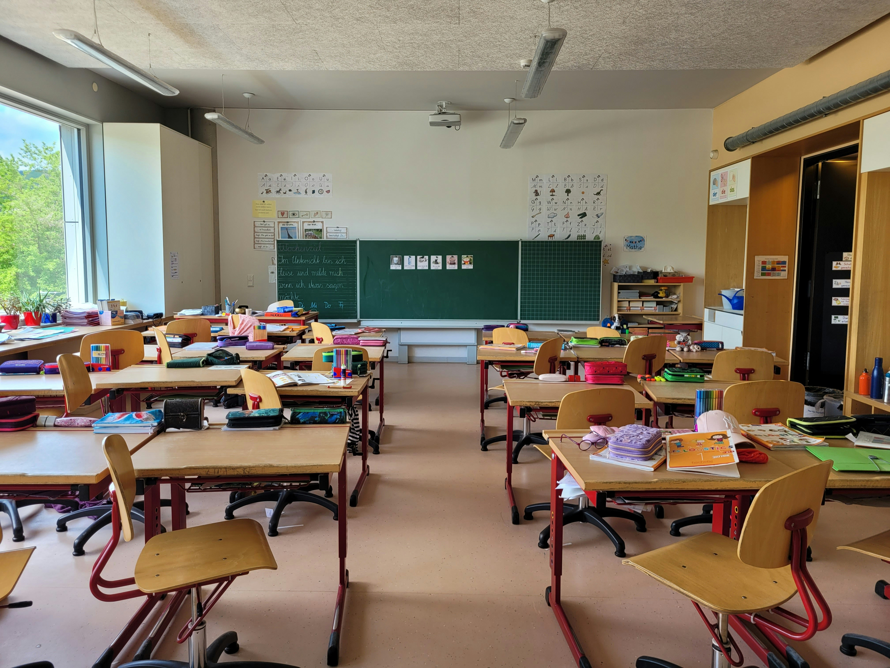

Keeping Children in Jewish Education
Delivering dedicated daily support for students navigating classroom hurdles, ensuring families never have to face the choice of public school.
Flagship Program


Children in the “gray zone” who need a dedicated mentor to remain in Jewish education.
Resilient 12th-grade graduates from the Golan Heights with North American schools and families.
15–20%
of school-age children nationally experience behavioral, emotional,
or developmental challenges.

Across North America, Jewish students face developmental hurdles. Unlike public schools backed by funding, private day schools lack resources for intensive daily support.
When families face $10,000+/month private shadows or 3–7 month waitlists, schools run out of capacity — and for exhausted parents, public school is the simplest relief, beginning a drift away from Jewish life.
The Solution
Delivering dedicated daily support for students navigating classroom hurdles, ensuring families never have to face the choice of public school.
Bringing the resilience, warmth, and dedication of Golan youth directly into Jewish schools to support teachers, students, and host families.

Golan youth are raised on mutual responsibility combining frontier grit with extraordinary emotional intelligence.
Daily relationships form the core of the program through classroom shadowing to prevent disruptions for students who struggle to focus, acting as a trusted big brother or sister on the playground to help kids join games, providing immediate stability during the critical 3 to 6 month insurance waitlist window, and serving as living ambassadors who bring the warmth and resilience of the Golan into classrooms and synagogues.
partner with usFrom Golan High Schools to U.S. Classrooms
5–10
Inaugural
Mentors
1–2
Per Cohort
Placement
South
Florida
Phase 1 Pilot Hub
Get Involved“No Jewish child should be forced into public school simply because their family is stuck on a 6-month waitlist or falls into the gray zone.”